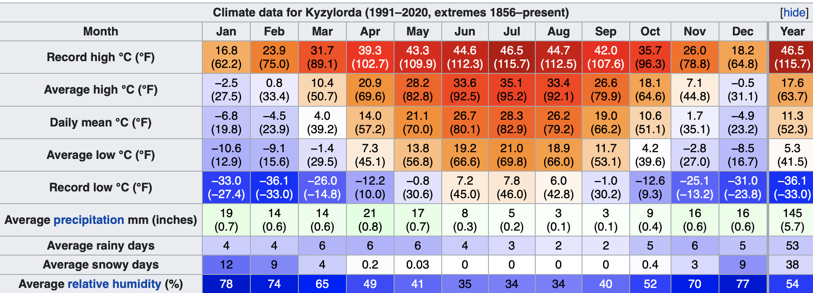

Kyzylorda has a cold desert climate (Köppen climate classification BWk) with hot summers and cold winters. Precipitation is low throughout the year, particularly in the summer months. Snow is common, though light, in winter. The lowest temperature on record is minus 33.9 °C (minus 29.0 °F), recorded in February 1969, and the highest temperature is 46.0 °C (114.8 °F), recorded on 7 July 1975. The new record high temperature of 46.5 °C (115.7 °F) was recorded on July 7, 2021
